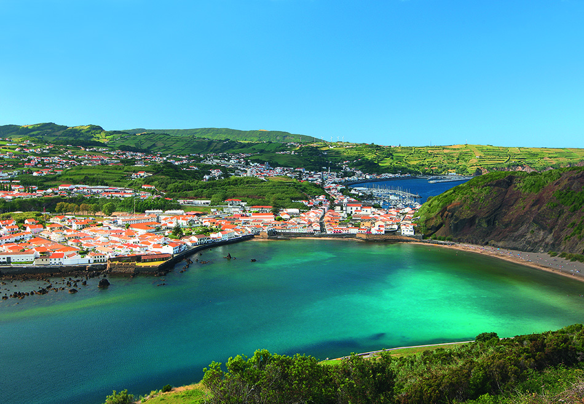

1427-1956

1427-1956
In Portugal, there is a group of islands that make up the Azores. One of these islands is the beginning of our club's story: A Ilha Azul, Faial. Faial, also known as the Blue Island due to its blue hydrangeas lining its roads, was a quaint island spanning only 66 square miles. Between the 18th and 20th centuries, it was mostly used as a stopover between Brazil and Asia.